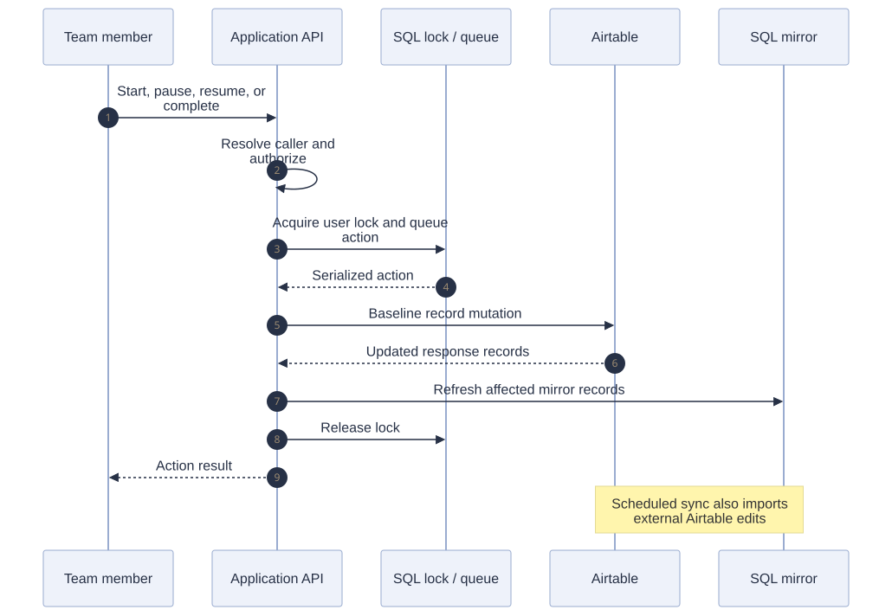

01 / THE PROBLEM
Central workforce platform
Management needed a joined-up view of what the team was working on, what was taking time, and where bottlenecks were forming. Task records, time logs, and reporting sources needed to be usable together.
Airtable also remained an active operational system. Building a better front end could not mean losing updates, leaving task state stale, or assuming the application was the only writer.
02 / MY CONTRIBUTION
I built and maintain the central workforce application and its bidirectional Airtable integration. My work spans task execution, time tracking, operational visibility, management reporting, permissions, and the synchronization paths that support them.
03 / ARCHITECTURE
Separate the read path from the write path

Read the Mermaid definition
flowchart TB
U[Team members and management] --> UI[React workforce application]
UI --> API[Express and tRPC API]
API --> AUTH[Caller / capability / data-scope checks]
AUTH --> READ[Reporting and read services]
READ --> DB[(MySQL / TiDB mirrors and read models)]
DB --> READ
READ --> UI
AUTH --> ACT[Serialized task and timer actions]
ACT --> LOCK[Row-based user lock and action queue]
LOCK --> WRITE[Baseline Airtable writer]
WRITE --> AT[(Airtable operational records)]
AT -->|Response records| ECHO[Inline mirror refresh]
ECHO --> DB
AT -->|External edits| SYNC[Per-table scheduled synchronization]
SYNC --> DB
KPI[KPI ingestion and calculations] --> DB
HS[Hubstaff integration] --> API
Follow a task action through the system

Read the Mermaid definition
sequenceDiagram
autonumber
participant User as Team member
participant API as Application API
participant Lock as SQL lock / queue
participant AT as Airtable
participant DB as SQL mirror
User->>API: Start, pause, resume, or complete
API->>API: Resolve caller and authorize
API->>Lock: Acquire user lock and queue action
Lock-->>API: Serialized action
API->>AT: Baseline record mutation
AT-->>API: Updated response records
API->>DB: Refresh affected mirror records
API->>Lock: Release lock
API-->>User: Action result
Note over AT,DB: Scheduled sync also imports external Airtable edits
04 / HOW IT WORKS
Resolve the person and permissions
The backend resolves the caller and applies capability and data-scope rules before serving operational data or accepting a mutation.
Serialize task and timer actions
Start, pause, resume, and completion actions go through a shared action path. Row-based locks coordinate the user’s actions across pooled database connections.
Update the operational records
The baseline writer sends task and time-log changes to Airtable. Returned records feed the SQL mirror without another provider read solely to refresh the same record.
Bring external changes back
Scheduled synchronization pulls Airtable changes into the SQL mirrors. Per-table jobs separate failure budgets so one slow table does not hold up every other table.
Turn the records into management views
SQL mirrors and read models support task, time, organization, and KPI views. Management can inspect activity, time spent, and bottlenecks through the central application.
05 / ENGINEERING DECISIONS
A database pool changes how locks work
Session-scoped database locks can remain held when acquisition and release land on different pooled connections. The implemented lock state lives in shared database rows instead.
Two directions require two contracts
Application mutations and externally edited Airtable records have different entry points. The mirror refresh after a write complements scheduled reconciliation rather than replacing it.
Roll out database authority by table family
The code has direct, shadow, outbox, and database-first writer modes. Their selection is gated by table family and drain readiness. An implemented option is not evidence that every family has completed the cutover.
Keep reporting meaning stable
KPI source mappings and reporting logic are a separate subsystem. Access, task state, and reporting calculations should not silently change together during a storage migration.
06 / OUTCOME & SCOPE
- Gave management one tool for team activity, time allocation, KPIs, and bottleneck visibility.
- Kept the application connected to the existing Airtable workflows in both directions.
- Added engineering controls around ordering, mirror freshness, permissions, and gradual migration.
Reading this case study
The diagram describes the baseline flow in the inspected implementation. It does not claim that all reads are SQL-only or that every writer family is database-authoritative. No before/after productivity or latency result is claimed.
Reviewed application README, task-action state machine, SQL locking implementation, mirror synchronization, writer interface, and architecture decisions.
Diagrams are abstracted from the workplace system. Customer records, credentials, internal endpoints, and proprietary source code are not included.